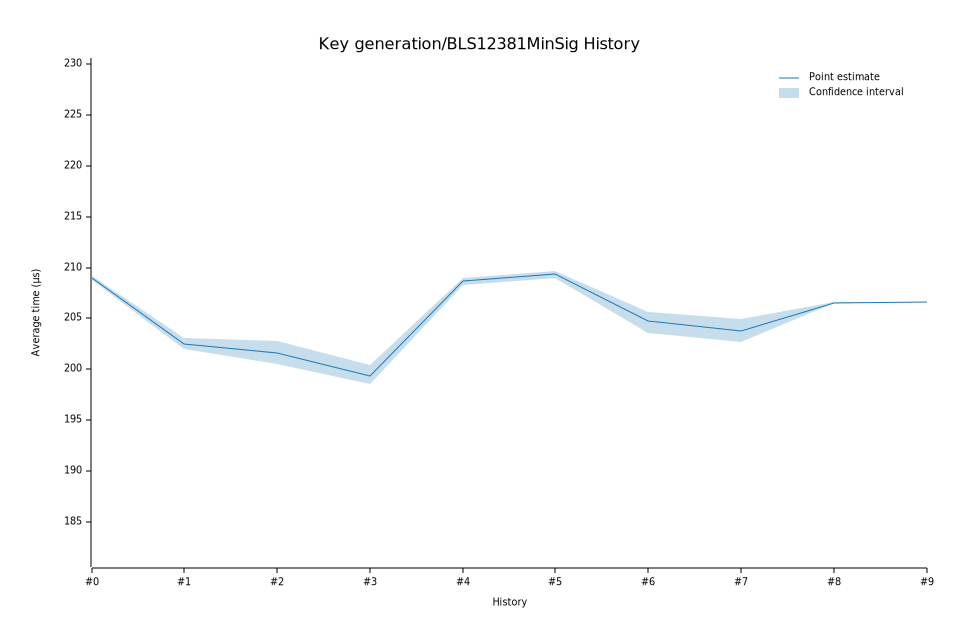

# 42023-02-09T12:58:21Z
|
Lower Bound |
Estimate |
Upper Bound |
| Value: |
208.30µs |
208.65µs |
208.94µs |
| Change in Value: |
+3.2357% |
+3.8013% |
+4.3470% |
No change in performance detected.
# 32023-02-08T19:06:20Z
|
Lower Bound |
Estimate |
Upper Bound |
| Value: |
198.53µs |
199.28µs |
200.40µs |
| Change in Value: |
-0.7670% |
-0.1430% |
+0.5232% |
Change within noise threshold.
# 22022-12-05T08:54:42Z
|
Lower Bound |
Estimate |
Upper Bound |
| Value: |
200.53µs |
201.58µs |
202.76µs |
| Change in Value: |
-1.8084% |
-1.3215% |
-0.8211% |
No change in performance detected.
# 12022-11-14T12:10:05Z
|
Lower Bound |
Estimate |
Upper Bound |
| Value: |
201.96µs |
202.50µs |
203.08µs |
| Change in Value: |
-2.7946% |
-2.4500% |
-2.0808% |
No change in performance detected.
# 02022-11-04T13:47:43Z
|
Lower Bound |
Estimate |
Upper Bound |
| Value: |
208.78µs |
209.00µs |
209.21µs |